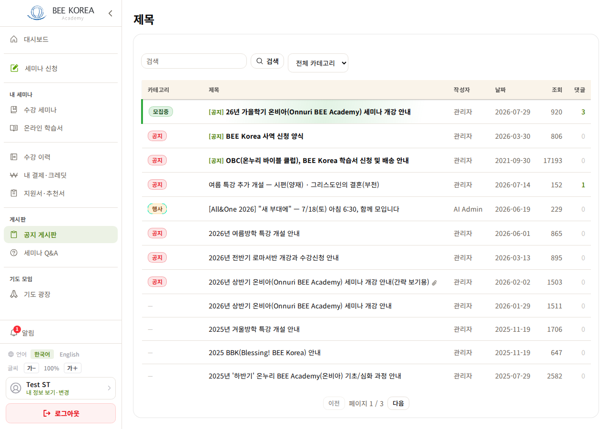
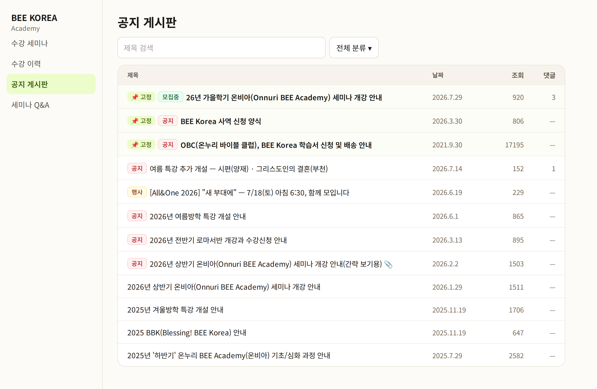
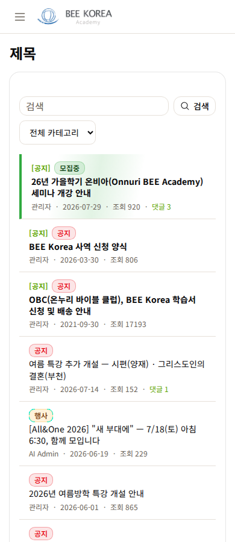
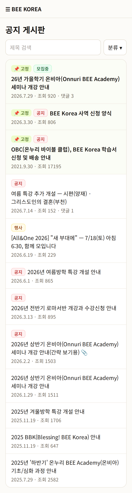

LMS 공지 게시판 — 디자인 시안 1차
2026-10-12 · 실제 공지 목록(공개 글) · 「지금」은 제목 버그(「제목」)를 고치기 전 사진 · 아직 적용 전
실측 (공지 51건)
- 분류 없음 43건 — 「분류」 칸이 거의 「—」
- 쓴 사람 「관리자」 50건(나머지 1건 AI Admin) — 「작성자」 칸이 거의 같은 말
- 고정 3건 — 화면이 제목 앞에 「[공지]」를 붙이는데 분류 칩도 「공지」라 같은 말이 두 번
무엇이 바뀌나
- 「분류」·「작성자」 칸을 빼고 분류는 제목 앞 칩으로(있을 때만) — 제목 칸이 넓어진다
- 고정 글: 「[공지]」 글자 대신 「📌 고정」 칩 + 옅은 바탕 · 제목만 굵게
- 날짜 모양 2026.7.29(다른 화면과 같게) · 댓글 0 은 「—」
- 휴대폰: 칩 → 제목 → 「날짜 · 조회 · 댓글」 한 줄
- ✅ 이미 고침(배포): 화면 제목이 「제목」으로 나오던 것 → 「공지 게시판」 · Q&A 분류 「Other」 → 저장 때 한국어로(1건 「기타」로 바꿈)
PC


휴대폰


정해 주실 것
- 공지 게시판에서 「작성자」 칸을 뺄까요? 51건 중 50건이 「관리자」입니다. 세미나 Q&A 는 사람마다 달라 그대로 둡니다. (추천)
- 고정 글 표시 = 「📌 고정」 칩으로 바꿀까요? 「[공지]」 글자와 「공지」 칩이 겹치지 않게. (추천)
같은 목록 부품(board-list)을 Q&A·사진 게시판·뉴스레터도 쓴다 — 칸 빼기는 공지 게시판 설정에서만, 날짜 모양·고정 칩은 모든 게시판에 같이 적용됩니다.